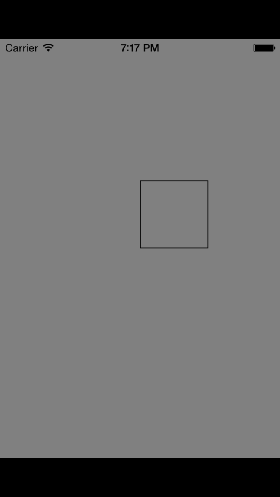
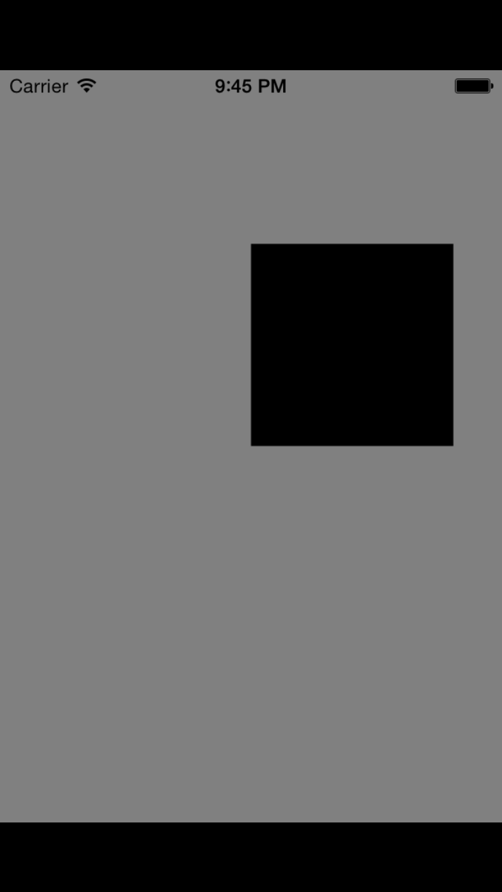
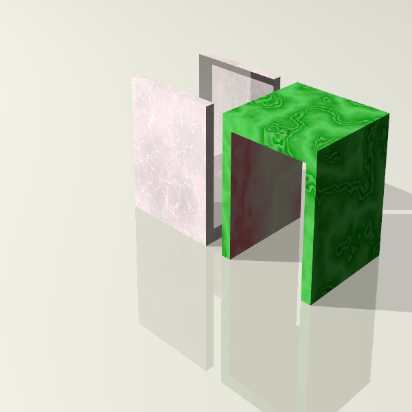
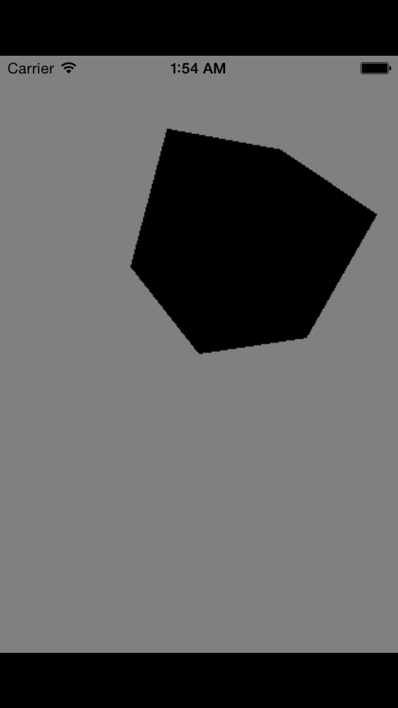

Draw your first Triangle in IOS OpenGL
OpenGL is low level computer graphic API, it powers most of graphic intensive games and softwares in this universe.
Ok, it is enough talk!, let's get into action and show some stuff! First, we need to review the coordinates system Normally, there are two coordinates systems in computer graphic OpenGL uses [Right-Handed Coordinates System] and Direct3D uses [Left-Handed Coordinates System]
We set z-axis=0 anyway since we only draw two dim triangle

1. Create an array with three vertices p=[x, y, z]
static const GLfloat triangle[] = {
0, 0, 0,
1, 0, 0,
0, 1, 0,
};
glVertexAttribPointer - define an array of generic vertex attribute data
glEnableVertexAttribArray - enable a generic vertex attribute array
glDiableVertexAttribArray - diable a generic vertex attribute array
glDrawArrays - render primitive from array data
glVertexAttribPointer(ATTRIB_VERTEX, 3, GL_FLOAT, 0, 0, triangle);
glEnableVertexAttribArray(ATTRIB_VERTEX);
glDrawArrays(GL_TRIANGLE_STRIP, 0, 3);

There are three functions that you need to called to draw a triangle in OpenGL
When a triangle is drawn, there are three options can be used:
GL_TRIANGLE_STRIP GL_TRIANGLE_FAN GL_TRIANGLES
What is GL_TRIANGLE_STRIP
Let assume we have four points p0=[0,0,0] p1=[1,0,1] p2=[1,1,0] p3=[0,1,0] in order.
First three points: {p0, p1, p2} forms a triangle, easy!
Second triangle is formed from {p1, p2, p3}
So each consecutive pair of triangle shares two vertices
Each new vertex is added, a new triangle is formed
The numbers of triangle can be formed in n vertices is n-2
What is GL_TRIANGLE_FAN
GL_TRIANGLE_FAN use the first vertex and last two vertices to form a triangle
The numbers of triangle can be formed in n vertices is n-2
What is GL_TRIANGLES
GL_TRIANGLES treats each triple of vertices as independent triangle.
If there are 3*n vertices, then there are n triangle can be drawn
Let draw some real stuff!
static const GLfloat triangle[] = {
0, 0, 0,
1, 0, 0,
1, 1, 0,
0, 1, 0,
};
glVertexAttribPointer(ATTRIB_VERTEX, 3, GL_FLOAT, 0, 0, triangle);
glEnableVertexAttribArray(ATTRIB_VERTEX);
glDrawArrays(GL_TRIANGLE_STRIP, 0, 4);

static const GLfloat triangle[] = {
0, 0, 0,
1, 0, 0,
1, 1, 0,
0, 1, 0,
};
glVertexAttribPointer(ATTRIB_VERTEX, 3, GL_FLOAT, 0, 0, triangle);
glEnableVertexAttribArray(ATTRIB_VERTEX);
glDrawArrays(GL_TRIANGLE_FAN, 0, 4);

static const GLfloat triangle[] = {
0, 0, 0,
1, 0, 0,
1, 1, 0,
0, 1, 0,
0, 2, 0,
1, 1.5, 0
};
glVertexAttribPointer(ATTRIB_VERTEX, 3, GL_FLOAT, 0, 0, triangle);
glEnableVertexAttribArray(ATTRIB_VERTEX);
glDrawArrays(GL_TRIANGLES, 0, 6);

static const GLfloat triangle[] = {
0, 0, 0,
1, 0, 0,
1, 1, 0,
0, 1, 0,
};
glVertexAttribPointer(ATTRIB_VERTEX, 3, GL_FLOAT, 0, 0, triangle);
glEnableVertexAttribArray(ATTRIB_VERTEX);
glDrawArrays(GL_LINE_LOOP, 0, 4);

static const GLfloat triangle[] = {
0, 0, 0,
1, 0, 0,
0, 1, 0,
1, 1, 0,
};
glVertexAttribPointer(ATTRIB_VERTEX, 3, GL_FLOAT, 0, 0, triangle);
glEnableVertexAttribArray(ATTRIB_VERTEX);
glDrawArrays(GL_TRIANGLE_STRIP, 0, 4);

static const GLfloat box[] = {
0, 0, 0,
1, 0, 0,
0, 1, 0,
1, 1, 0,
0, 1, -1,
1, 1, -1,
0, 0, -1,
1, 0, -1,
1, 1, 0,
1, 0, 0,
0, 0, -1,
0, 0, 0,
0, 1, -1,
0, 1, 0,
};
glVertexAttribPointer(ATTRIB_VERTEX, 3, GL_FLOAT, 0, 0, box);
glEnableVertexAttribArray(ATTRIB_VERTEX);
glDrawArrays(GL_TRIANGLE_STRIP, 0, 14);


Understand View Matrix in OpenGL
\begin{aligned}
\vec{f} \otimes \overrightarrow{up} &= \vec{s} \quad \mbox{Right-handed rule} \\
\vec{s} \otimes \vec{f} &= \vec{u} \quad \mbox{Right-handed rule} \\
&\mbox{mapping } \vec{s}, \vec{u}, \vec{f} \mbox{ to } x, y, z \\
&\vec{s} \rightarrow +x \\
&\vec{u} \rightarrow +y \\
&\vec{f} \rightarrow -z \\
\end{aligned}
View Matrix can be constructed with gluLookAt in OpenGL
Specify the eye poistion, lookat position, and up Vector.
gluLookAt(
Eyex
Eyey
Eyez
Atx
Aty
Atz
Upx
Upy
Upz)
For example, if you want to change the eye position to $(0, 0, -2)$, two units away from the screen.
loadIdentity()
gluLookAt(0 0 -2, ...)
View Matrix is essential the orthonormal matrix for the camera or eye.
1. Given up direction $up=(0, 1, 0)$ and lookAt direction[e.g. from eye to center]
2. $\vec{s}$ can be computed with cross product
3. With $\vec{s}$ and lookAt direciton, $\vec{u}$ can be computed with cross product again
Once $\text{side} = \vec{s}, \text{up}=\vec{u}, \text{forward}=\vec{f}$ are known, the View Matrix can be constructed
We use the above example, and compute the View Matrix.
$\vec{up} = (0, 1, 0)$
the vector from eye to center is $\vec{f} = (0, 0, 0) - (0, 2, 3) = (0, -2, -3) $
$\vec{s} = \vec{f} \times \vec{up} = (0, -2, -3) \times (0, 1, 0)$ [Since $\vec{up} \text{ and } \vec{u}$ are same direction] \begin{align*} \vec{s} &= \vec{s} \times -\vec{f} = \vec{f} \times \vec{up} = \left| \begin{array}{ccc} i & j & k \\ 0 & -2 & -3 \\ 0 & 1 & 0 \end{array} \right| \\ &= \left| \begin{array}{cc} -2 & -3 \\ 1 & 0 \end{array} \right|i(-1)^{1+1} + \left| \begin{array}{cc} 0 & -3 \\ 0 & 0 \end{array} \right|j(-1)^{1+2} + \left| \begin{array}{cc} 0 & -2 \\ 0 & 1 \end{array} \right|k(-1)^{1+3} \quad \text{Cofactor Expension} \\ &= 3i + 0j + 0k = 3i \end{align*} Since we want to map $\vec{u}$ to $ y = \left[ \begin{array}{c} 0 \\ 1 \\ 0 \\ \end{array} \right] $ and one axis to $ z = \left[ \begin{array}{c} 0 \\ 0 \\ 1 \\ \end{array} \right] $ and $\vec{s}$ to $ x = \left[ \begin{array}{c} 1 \\ 0 \\ 0 \\ \end{array} \right] $ $f$ point to the screen, and $+z$ is point outside of the screen in OpenGL.
$f$ changes to $-f$ so that $\vec{s}, \vec{u}, -\vec{f}$ map to $x, y, z$
From the picture above, $\vec{s} = \vec{u} \times - \vec{f} = \vec{f} \times \vec{u}$
$\vec{u} = -\vec{f} \times \vec{s} = \vec{s} \times \vec{f}$
$\vec{s} = (3, 0, 0) \quad \vec{f} = (0, -2, -3)$
\begin{align*} \vec{u} &= \vec{s} \times \vec{f} = \left| \begin{array}{ccc} i & j & k \\ 3 & 0 & 0 \\ 0 & -2 & -3 \end{array} \right| \\ &= \left| \begin{array}{cc} 0 & 0 \\ -2 & -3 \end{array} \right|i(-1)^{1+1} + \left| \begin{array}{cc} 3 & 0 \\ 0 & -3 \end{array} \right|j(-1)^{1+2} + \left| \begin{array}{cc} 3 & 0 \\ 0 & -2 \end{array} \right|k(-1)^{1+3} \quad \text{Cofactor Expension} \\ &= 0i + 9j - 6k \end{align*} $\vec{s} = (3, 0, 0) \quad \vec{u} = (0, 9, -6) \quad \vec{f} = (0, -2, -3) $
normalize three vectors
\begin{align*} \begin{split} \vec{s}_{n} &= \frac{(3, 0, 0)}{\sqrt{\|\vec{s}\|}} &= (1, 0, 0) \\ \vec{u}_{n} &= \frac{(0, 9, -6)}{\sqrt{\|\vec{u}\|}} &= (0, \frac{3}{\sqrt{13}}, \frac{-2}{\sqrt{13}}) \\ \vec{f}_{n} &= \frac{(0, -2, -3)}{\sqrt{\|\vec{f}\|}} &= (0, \frac{-2}{\sqrt{13}}, \frac{-3}{\sqrt{13}}) \\ \end{split} \end{align*} Since three $\vec{s}, \vec{u}, -\vec{f}$ are orthonormal vectors and they can forms a rotation matrix.
\begin{align*} \begin{split} \mathbf{R} &= \begin{bmatrix} s_{n_x} & u_{n_x} & -f_{n_x} & 0 \\ s_{n_y} & u_{n_y} & -f_{n_y} & 0 \\ s_{n_z} & u_{n_z} & -f_{n_z} & 0 \\ 0 & 0 & 0 & 1 \\ \end{bmatrix} \\ \mathbf{R} &= \begin{bmatrix} 1 & 0 & 0 & 0 \\ 0 & \frac{3}{\sqrt{13}} & \frac{2}{\sqrt{13}} & 0 \\ 0 & \frac{-2}{\sqrt{13}} & \frac{3}{\sqrt{13}} & 0 \\ 0 & 0 & 0 & 1 \\ \end{bmatrix} \end{split} \end{align*} We also translate the camera from center to \[ \vec{v} = \left[ \begin{array}{c} 0 \\ 2 \\ 3 \\ 1 \\ \end{array} \right] \\ \] The translation matrix is \[ \mathbf{T} = \begin{bmatrix} 1 & 0 & 0 & 0 \\ 0 & 1 & 0 & 2 \\ 0 & 0 & 1 & 3 \\ 0 & 0 & 0 & 1 \\ \end{bmatrix} \] Let $\mathbf{M}_{v} = \mathbf{RT}$ if we want to conver the points from World Coordinate to View Coordinates, we can multiply the point with $\mathbf{M}_{v}^{-1}$ \begin{align*} \begin{split} p_{view} &= \mathbf{M}_{v}^{-1} \left[ \begin{array}{c} x \\ y \\ z \\ 1 \\ \end{array} \right] \\ \mathbf{M}_{v}^{-1} &= (\mathbf{TR})^{-1} \\ \mathbf{M}_{v}^{-1} &= \mathbf{R}^{-1} \mathbf{T}^{-1} \\ \mathbf{M}_{v}^{-1} &= \mathbf{R}^{T} \mathbf{T}^{-1} \qquad \because \mathbf{R} \text{ is orthonormal matrix}\\ % invert of rotation matrix \mathbf{R}^{T} &= \begin{bmatrix} 1 & 0 & 0 & 0 \\ 0 & \frac{3}{\sqrt{13}} & \frac{-2}{\sqrt{13}} & 0 \\ 0 & \frac{2}{\sqrt{13}} & \frac{3}{\sqrt{13}} & 0 \\ 0 & 0 & 0 & 1 \\ \end{bmatrix} \\ % invert of translation matrx \mathbf{T}^{-1} &= \begin{bmatrix} 1 & 0 & 0 & 0 \\ 0 & 1 & 0 & -2 \\ 0 & 0 & 1 & -3 \\ 0 & 0 & 0 & 1 \\ \end{bmatrix} \\ % View matrix \mathbf{M}_{v}^{-1} &= \begin{bmatrix} 1 & 0 & 0 & 0 \\ 0 & \frac{3}{\sqrt{13}} & \frac{-2}{\sqrt{13}} & 0 \\ 0 & \frac{2}{\sqrt{13}} & \frac{3}{\sqrt{13}} & -\sqrt{13} \\ 0 & 0 & 0 & 1 \\ \end{bmatrix} \\ \text{The View Matrix is } \mathbf{M}_{v}^{-1} \end{split} \end{align*}
We use the above example, and compute the View Matrix.
$\vec{up} = (0, 1, 0)$
the vector from eye to center is $\vec{f} = (0, 0, 0) - (0, 2, 3) = (0, -2, -3) $
$\vec{s} = \vec{f} \times \vec{up} = (0, -2, -3) \times (0, 1, 0)$ [Since $\vec{up} \text{ and } \vec{u}$ are same direction] \begin{align*} \vec{s} &= \vec{s} \times -\vec{f} = \vec{f} \times \vec{up} = \left| \begin{array}{ccc} i & j & k \\ 0 & -2 & -3 \\ 0 & 1 & 0 \end{array} \right| \\ &= \left| \begin{array}{cc} -2 & -3 \\ 1 & 0 \end{array} \right|i(-1)^{1+1} + \left| \begin{array}{cc} 0 & -3 \\ 0 & 0 \end{array} \right|j(-1)^{1+2} + \left| \begin{array}{cc} 0 & -2 \\ 0 & 1 \end{array} \right|k(-1)^{1+3} \quad \text{Cofactor Expension} \\ &= 3i + 0j + 0k = 3i \end{align*} Since we want to map $\vec{u}$ to $ y = \left[ \begin{array}{c} 0 \\ 1 \\ 0 \\ \end{array} \right] $ and one axis to $ z = \left[ \begin{array}{c} 0 \\ 0 \\ 1 \\ \end{array} \right] $ and $\vec{s}$ to $ x = \left[ \begin{array}{c} 1 \\ 0 \\ 0 \\ \end{array} \right] $ $f$ point to the screen, and $+z$ is point outside of the screen in OpenGL.
$f$ changes to $-f$ so that $\vec{s}, \vec{u}, -\vec{f}$ map to $x, y, z$
From the picture above, $\vec{s} = \vec{u} \times - \vec{f} = \vec{f} \times \vec{u}$
$\vec{u} = -\vec{f} \times \vec{s} = \vec{s} \times \vec{f}$
$\vec{s} = (3, 0, 0) \quad \vec{f} = (0, -2, -3)$
\begin{align*} \vec{u} &= \vec{s} \times \vec{f} = \left| \begin{array}{ccc} i & j & k \\ 3 & 0 & 0 \\ 0 & -2 & -3 \end{array} \right| \\ &= \left| \begin{array}{cc} 0 & 0 \\ -2 & -3 \end{array} \right|i(-1)^{1+1} + \left| \begin{array}{cc} 3 & 0 \\ 0 & -3 \end{array} \right|j(-1)^{1+2} + \left| \begin{array}{cc} 3 & 0 \\ 0 & -2 \end{array} \right|k(-1)^{1+3} \quad \text{Cofactor Expension} \\ &= 0i + 9j - 6k \end{align*} $\vec{s} = (3, 0, 0) \quad \vec{u} = (0, 9, -6) \quad \vec{f} = (0, -2, -3) $
normalize three vectors
\begin{align*} \begin{split} \vec{s}_{n} &= \frac{(3, 0, 0)}{\sqrt{\|\vec{s}\|}} &= (1, 0, 0) \\ \vec{u}_{n} &= \frac{(0, 9, -6)}{\sqrt{\|\vec{u}\|}} &= (0, \frac{3}{\sqrt{13}}, \frac{-2}{\sqrt{13}}) \\ \vec{f}_{n} &= \frac{(0, -2, -3)}{\sqrt{\|\vec{f}\|}} &= (0, \frac{-2}{\sqrt{13}}, \frac{-3}{\sqrt{13}}) \\ \end{split} \end{align*} Since three $\vec{s}, \vec{u}, -\vec{f}$ are orthonormal vectors and they can forms a rotation matrix.
\begin{align*} \begin{split} \mathbf{R} &= \begin{bmatrix} s_{n_x} & u_{n_x} & -f_{n_x} & 0 \\ s_{n_y} & u_{n_y} & -f_{n_y} & 0 \\ s_{n_z} & u_{n_z} & -f_{n_z} & 0 \\ 0 & 0 & 0 & 1 \\ \end{bmatrix} \\ \mathbf{R} &= \begin{bmatrix} 1 & 0 & 0 & 0 \\ 0 & \frac{3}{\sqrt{13}} & \frac{2}{\sqrt{13}} & 0 \\ 0 & \frac{-2}{\sqrt{13}} & \frac{3}{\sqrt{13}} & 0 \\ 0 & 0 & 0 & 1 \\ \end{bmatrix} \end{split} \end{align*} We also translate the camera from center to \[ \vec{v} = \left[ \begin{array}{c} 0 \\ 2 \\ 3 \\ 1 \\ \end{array} \right] \\ \] The translation matrix is \[ \mathbf{T} = \begin{bmatrix} 1 & 0 & 0 & 0 \\ 0 & 1 & 0 & 2 \\ 0 & 0 & 1 & 3 \\ 0 & 0 & 0 & 1 \\ \end{bmatrix} \] Let $\mathbf{M}_{v} = \mathbf{RT}$ if we want to conver the points from World Coordinate to View Coordinates, we can multiply the point with $\mathbf{M}_{v}^{-1}$ \begin{align*} \begin{split} p_{view} &= \mathbf{M}_{v}^{-1} \left[ \begin{array}{c} x \\ y \\ z \\ 1 \\ \end{array} \right] \\ \mathbf{M}_{v}^{-1} &= (\mathbf{TR})^{-1} \\ \mathbf{M}_{v}^{-1} &= \mathbf{R}^{-1} \mathbf{T}^{-1} \\ \mathbf{M}_{v}^{-1} &= \mathbf{R}^{T} \mathbf{T}^{-1} \qquad \because \mathbf{R} \text{ is orthonormal matrix}\\ % invert of rotation matrix \mathbf{R}^{T} &= \begin{bmatrix} 1 & 0 & 0 & 0 \\ 0 & \frac{3}{\sqrt{13}} & \frac{-2}{\sqrt{13}} & 0 \\ 0 & \frac{2}{\sqrt{13}} & \frac{3}{\sqrt{13}} & 0 \\ 0 & 0 & 0 & 1 \\ \end{bmatrix} \\ % invert of translation matrx \mathbf{T}^{-1} &= \begin{bmatrix} 1 & 0 & 0 & 0 \\ 0 & 1 & 0 & -2 \\ 0 & 0 & 1 & -3 \\ 0 & 0 & 0 & 1 \\ \end{bmatrix} \\ % View matrix \mathbf{M}_{v}^{-1} &= \begin{bmatrix} 1 & 0 & 0 & 0 \\ 0 & \frac{3}{\sqrt{13}} & \frac{-2}{\sqrt{13}} & 0 \\ 0 & \frac{2}{\sqrt{13}} & \frac{3}{\sqrt{13}} & -\sqrt{13} \\ 0 & 0 & 0 & 1 \\ \end{bmatrix} \\ \text{The View Matrix is } \mathbf{M}_{v}^{-1} \end{split} \end{align*}
If column vectors are orthonormal, then they can form a rotation matrix. Why? let prove it
let matrix $A$ and two columns are orthonormal.
\[
A= \begin{bmatrix}
a & b\\
c & d
\end{bmatrix}
\]
we have following $ a b + c d = 0 \quad a^2 + c^2 = 1 \text{ and } b^2 + d^2 = 1$, given a vector \begin{align*} \begin{split} \vec{v} &= \left [ \begin{array}{c} x \\ y \\ \end{array}\right] \\ \vec{u} &= \left[ \begin{array}{c} ax + by \\ cx + dy \end{array} \right] = \begin{bmatrix} a & b \\ c & d \end{bmatrix} \times \left[ \begin{array}{c} x \\ y \end{array} \right] \\ \| \vec{u} \| &= (ax + by)^2 + (cx + dy)^2 \\ &= a^2 x^2 + b^2 y^2 + 2abxy + c^2 x^2 + d^2 y^2 + 2cdxy \\ &= (a^2 + c^2) x^2 + (b^2 + d^2) y^2 + 2(ab + cd)xy \\ &= x^2 + y^2 \because a b + c d = 0 \quad a^2 + c^2 = 1 \quad b^2 + d^2 = 1 \\ &\Rightarrow \| \vec{u} \| = \| \vec{v} \| \\ &\Rightarrow A \text{ is rotation matrix} \end{split} \end{align*}
we have following $ a b + c d = 0 \quad a^2 + c^2 = 1 \text{ and } b^2 + d^2 = 1$, given a vector \begin{align*} \begin{split} \vec{v} &= \left [ \begin{array}{c} x \\ y \\ \end{array}\right] \\ \vec{u} &= \left[ \begin{array}{c} ax + by \\ cx + dy \end{array} \right] = \begin{bmatrix} a & b \\ c & d \end{bmatrix} \times \left[ \begin{array}{c} x \\ y \end{array} \right] \\ \| \vec{u} \| &= (ax + by)^2 + (cx + dy)^2 \\ &= a^2 x^2 + b^2 y^2 + 2abxy + c^2 x^2 + d^2 y^2 + 2cdxy \\ &= (a^2 + c^2) x^2 + (b^2 + d^2) y^2 + 2(ab + cd)xy \\ &= x^2 + y^2 \because a b + c d = 0 \quad a^2 + c^2 = 1 \quad b^2 + d^2 = 1 \\ &\Rightarrow \| \vec{u} \| = \| \vec{v} \| \\ &\Rightarrow A \text{ is rotation matrix} \end{split} \end{align*}
Projection Matrix in OpenGL.
What is Projection Matrix in OpenGL.
Projection matrix maps frustum to cube[NDC] in Perspective projection
There are two type of Projection Matrix in OpenGL.
Perspective Projection and Orthogonal Projection
We will derived Perspective Projection.
What does Perspective Projection do in OpenGL.
It projects points in eye/camera space to Normal Device Coordinates[NDC]
\begin{align*}
\frac{x_p}{x_e} &= \frac{-n}{z_e} \Rightarrow x_p = \frac{nx_e}{-z_e} \\
\frac{y_p}{y_e} &= \frac{-n}{z_e} \Rightarrow y_p = \frac{ny_e}{-z_e} \\
\left[ \begin{array}{c}
x_p \\
y_p \\
z_p \\
w_p \\
\end{array} \right]
&= \begin{bmatrix}
n & 0 & 0 & 0 \\
0 & n & 0 & 0 \\
0 & 0 & A & B \\
0 & 0 & 0 & 1 \\
\end{bmatrix} \times
\left[ \begin{array}{c}
x_e \\
y_e \\
z_e \\
w_e \\
\end{array} \right] \\
%
z_p &= Az_e + B w_e \\
\frac{z_p}{-z_e} &= -A + \frac{B w_e}{-z_e} \\
&\text{Since we want to have something like following form} \\
z_p &= \frac{\sigma}{-z_e} \\
-z_p z_e &= \sigma \\
\sigma &= A z_e + B w_e \\
z_p &= \frac{A z_e + B w_e}{-z_e} \\
w_e &= 1 \\
-n &= -A + \frac{B}{n} \quad \because z_e = -n \\
-f &= -A + \frac{B}{f} \quad \because z_e = -f \\
-n + f &= \frac{B}{n} - \frac{B}{f} \\
B &= nf \\
A &= n + f \\
z_p &= \frac{(n+f) z_e + nf}{-z_e} \\
\left[ \begin{array}{c}
x_p \\
y_p \\
z_p \\
w_p \\
\end{array} \right]
&= \begin{bmatrix}
n & 0 & 0 & 0 \\
0 & n & 0 & 0 \\
0 & 0 & n+f & nf \\
0 & 0 & -1 & 0 \\
\end{bmatrix}
\left[ \begin{array}{c}
x_e \\
y_e \\
z_e \\
w_e \\
\end{array} \right] \\
&\text{Map A} [x_p, y_p, z_p, w_p] [x_n, y_n, z_n, w_n]
\end{align*}
We try to map the near plane to font plane of NDC, they are linear relationship
\begin{align*}
\begin{split}
x_n &= \frac{1-(-1)}{r-l} x_p + \alpha \\
x_n &= \frac{2}{r - l} x_p + \alpha \\
1 &= \frac{2}{r - l} r + \alpha \\
\alpha &= 1 - \frac{2}{r - l} r \\
\alpha &= -\frac{r + l}{r - l} \\
x_n &= \frac{2}{r - l} x_p - \frac{r + l}{r - l} \\
x_n &= \frac{2}{r - l} \frac{nx_e}{-z_e} - \frac{r + l}{r - l} \quad \because x_p = \frac{nx_e}{-z_e} \\
x_n &= \frac{ \frac{2n}{r-l}x_e + \frac{r + l}{r - l}z_e }{-z_e} \\ \\
\end{split}
\end{align*}
\begin{align*}
\begin{split}
y_n &= \frac{1-(-1)}{t - b} y_p + \beta \\
y_n &= \frac{2}{t - b} y_p + \beta \\
1 &= \frac{2}{t - b} r + \beta \\
\beta &= -\frac{t + b}{t - b} \\
y_n &= \frac{2}{t - b} y_p - \frac{t + b}{t - b} \\
y_n &= \frac{2}{t - b} \frac{ny_e}{-z_e} - \frac{t + b}{t - b} \quad \because y_p = \frac{ny_e}{-z_e} \\
y_n &= \frac{ \frac{2n}{t - b}y_e + \frac{t + b}{t - b}z_e }{-z_e} \\ \\
\end{split}
\end{align*}
\begin{align*}
\begin{split}
\text{Similary} \\
z_n &= \frac{1-(-1)}{n - f} z_p + \gamma \\
z_n &= \frac{2}{n - f} z_p + \gamma \\
z_n &= -1 \quad z_p = -n \\
-1 &= \frac{2}{n-f} - n + \gamma \\
\gamma &= \frac{n + f}{n - f} \\
z_n &= \frac{2}{n-f} z_p + \frac{n+f}{n-f} \quad \because z_p = \frac{(n+f) z_e + nf}{-z_e} \\
z_n &= \frac{2}{n-f} \frac{[(n+f) z_e + nf]}{-z_e} + \frac{n+f}{n-f} \\
z_n &= \frac{2}{n-f} \frac{[(n+f) z_e + nf]}{-z_e} + \frac{(n+f)(-z_e)}{(n-f)(-z_e)} \\
z_n &= \frac{(n+f)z_e + 2nf}{(n-f)(-z_e)} \\
z_n &= \frac{\frac{n+f}{n-f}z_e}{-z_e} + \frac{ \frac{2nf}{n-f}}{-z_e} \\
\end{split}
\end{align*}
Projection matrix maps Frustum to View Volume, or map Frustum to Cube
\begin{align*}
\begin{split}
\left[ \begin{array}{c}
x_n \\
y_n \\
z_n \\
w_n \\
\end{array} \right]
&= \begin{bmatrix}
\frac{2n}{r-l} & 0 & \frac{r+l}{r-l} & 0 \\
0 & \frac{2n}{t-b} & \frac{t+b}{t-b} & 0 \\
0 & 0 & \frac{n+f}{n-f} & \frac{2nf}{n-f} \\
0 & 0 & -1 & 0 \\
\end{bmatrix}
\left[ \begin{array}{c}
x_e \\
y_e \\
z_e \\
w_e \\
\end{array} \right] \\
\end{split}
\end{align*}
glFrustum(left, right, bottom, top, near, far)
glFrustum(l, r, b, t, n, f)
Orthogonal Matrix
gluOrtho2D[left, right, bottom, top];
Lighting in OpenGL
1. Enable Lighting in OpenGL
glEnable[GL_LIGHTING]
2. Setup Light position in OpenGL
glEnable[GL_LIGHT0] // enable light0
3. Setup Normal for Light in OpenGL
compute the normal of vertex, OpenGL uses normal to compute the light
4. Setup material for Light in OpenGL
In OpenGL, there are something call "Material Properties"
GL_DIFFUSE - there are two characteristics: Diffuse reflection and Specular reflection.
- Diffuse reflection reflects light in different directions.
- Specular reflection reflects more light in mirror direction.
GL_AMBIENT - Ambient light is the light come from different direction.
GL_SPECULAR - The property sets the specular color. Note that the specular color for most surface is white, event if the surface is a different color.
GL_EMISSION - The emission property is how much the surface generates its own light
GL_SHININESS - This determine how much shiny a surface is. Values from 0 to 128
// enable light
glEnable(GL_LIGHTING)
// enable GL_LIGHT0
glEnable(GL_LIGHT0)
// setup normal
glNormal3d(0, 1, 0)
// setup material
glfloat cyan[] = {0.0f, 0.8f, 0.8f, 1.f}
glMaterialfv(GL_FRONT, GL_DIFFUSE, cyan);
Transparent or Blender
1. Enable Blender in OpenGL
2. Use glColor4f instead of glColor3f
3. set each vertex for different colors
glEnable(GL_BLEND);
glBlendFunc(GL_SRC_ALPHA, GL_ONE_MINUS_SRC_ALPHA);
glColor4f(0, 0, 1, 0.5) // alpha = 0.5